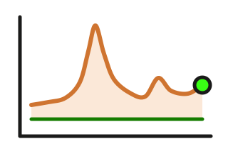

Risikoaufschläge: Euro-Staaten seit 1991, USA seit 1984
Wie viel mehr Zins zahlen Italien, Frankreich oder ein Unternehmen als der Schuldner mit der besten Bonität? Der Aufschlag ist das Angstbarometer des Anleihenmarkts – für Euro-Staaten gegen die Bundesanleihe seit 1991, für US-Unternehmen gegen die US-Staatsanleihe seit 1984.

Staatsanleihen 10 Jahre gegen Deutschland · Monatswerte · 1991 – 2026 · Stand: August 2026
Euro-Staaten gegen die Bundesanleihe
Vor dem Euro der Preis der Währung, seither der Preis des Zweifels.
USA: Unternehmen gegen Staatsanleihe
Unternehmen hoher Bonität (AAA bis A), 10 Jahre Laufzeit.
Monatswerte in Prozentpunkten.
Was der Aufschlag ist
Aufschlag = Rendite minus Rendite der Bundesanleihe – der Lohn für das Risiko des Schuldners, auch Spread genannt. Gerechnet wird mit Monatsdurchschnitten; deshalb steht hier für den Bund ein anderer Wert als der Tageswert auf Staatsanleihen seit 1970.
Stand August 2026: Frankreich zahlt seit Oktober 2024 mehr als Spanien, Griechenland weniger als Italien. 2012 war es umgekehrt.
Aufschlag gegen die Bundesanleihe, letzter Monat
10-jährige Staatsanleihen, August 2026, Prozentpunkte über Deutschland. Die Anleihen dazu.
Kurz gesagt: Der Aufschlag ist der Preis des Zweifels – ein Grund, nachzusehen, warum: Bonität und Ratings.
Das Angstbarometer
Aufschläge messen nicht, ob ein Schuldner ausfällt, sondern wie viele daran zweifeln. 1992 zahlte Italien 7 Punkte mehr – wegen der Lira, nicht wegen einer Pleite. Mit dem Euro fiel der Aufschlag auf 0,1.
2011 kippte das: Italien 5,2 Punkte, Spanien 5,6, Griechenland 27. Nach Draghis „Whatever it takes“ im Juli 2012 schmolzen die Aufschläge, die Kurse stiegen.
Die großen Ausschläge
| Krise | Wer | Aufschlag |
|---|---|---|
| 1992Währungskrise | Italien | 7,0Okt 1992 |
| 2008Finanzkrise | US-Unternehmen AAA bis A | 5,0Okt 2008 |
| 2011/12Eurokrise | Griechenland | 27,4Feb 2012 |
| Portugal | 12,0Jan 2012 | |
| Spanien | 5,6Jul 2012 | |
| Italien | 5,2Nov 2011 |
Monatswerte. Heute: Italien 0,81, US-Unternehmen 0,90.
Kurz gesagt: Auf dem Höhepunkt der Angst waren die Kurse oft am niedrigsten – erkennbar erst hinterher.
Was das für deine Anleihe heißt
Der Aufschlag wirkt zweimal. Als Einkommen: Er ist der Mehrzins, den du jedes Jahr bekommst, solange der Schuldner zahlt. Auf den Kurs: Verlangt der Markt für deinen Schuldner plötzlich mehr Aufschlag – etwa nach schlechten Nachrichten –, fällt der Kurs deiner Anleihe sofort, weil sie noch den alten, niedrigeren Zins zahlt. Wie stark, zeigt die Tabelle: je länger die Restlaufzeit, desto stärker. Sinkt der Aufschlag wieder, steigt der Kurs im gleichen Maß.
Wer bis zur Fälligkeit hält, bekommt trotzdem 100 % zurück – der Kursverlust ist dann nur vorübergehend, solange der Schuldner zahlt.
So stark fällt der Kurs, wenn der Aufschlag steigt
| Mehr Aufschlag | Kursverlust bei Restlaufzeit | ||
|---|---|---|---|
| 2 Jahre | 5 Jahre | 10 Jahre | |
| 0,5 Prozentpunkte mehr | −0,9 % | −2,3 % | −4,2 % |
| 1 Prozentpunkt mehr | −1,9 % | −4,5 % | −8,1 % |
| 2 Prozentpunkte mehr | −3,7 % | −8,7 % | −15,4 % |
Lesebeispiel: Deine Anleihe läuft noch 5 Jahre, der Markt verlangt 1 Prozentpunkt mehr Aufschlag – der Kurs fällt um 4,5 %, von 100 auf rund 95,5. Gerechnet bei 3 % Kupon; im Rechner mit deinen Zahlen.
Kurz gesagt: Ein hoher Aufschlag ist kein Schnäppchen, sondern der Preis für möglichen Ausfall: Risiko kennen.
Datenquellen und Methodik
Methodik. Aufschlag = Rendite minus Rendite der Vergleichsanleihe (Bundesanleihe bzw. US-Staatsanleihe) im selben Monat, in Prozentpunkten (berechnet). Euro-Staaten: 10-jährige Staatsanleihen minus Deutschland, Monatsdurchschnitte ab März 1991. Die OECD meldet für Deutschland die Umlaufsrendite 9–10 Jahre, etwas unter der jüngsten Bundesanleihe; die Aufschläge liegen daher 0,1 bis 0,3 Punkte über den Marktspreads. USA: Unternehmensanleihen hoher Bonität (AAA bis A, 10 Jahre; Renditekurve des US-Finanzministeriums) minus 10-jährige US-Staatsanleihe, Monatswerte seit 1984. Die Unternehmensrendite ist eine Spot-Rendite (Nullkupon), die Staatsanleihe eine Kuponrendite; der Aufschlag fällt dadurch meist 0,1 bis 0,2 Punkte höher aus. Kurstabelle: Barwert bei 3 % Kupon.
Datenquellen. OECD, „Long-term interest rates“, elf Länder (wie Staatsanleihen seit 1970; keine Tageswerte). USA: U.S. Treasury, HQM Corporate Bond Yield Curve (Spot-Rendite 10 Jahre, monatlich, via FRED) und OECD (10-jährige US-Staatsanleihe, Monatsdurchschnitt). Abruf täglich um 10 Uhr; neue Monatswerte erscheinen rund zwei Wochen nach Monatsende.
Keine Anlageberatung.
Daten-Stand: USA August 2026 · Länder August 2026